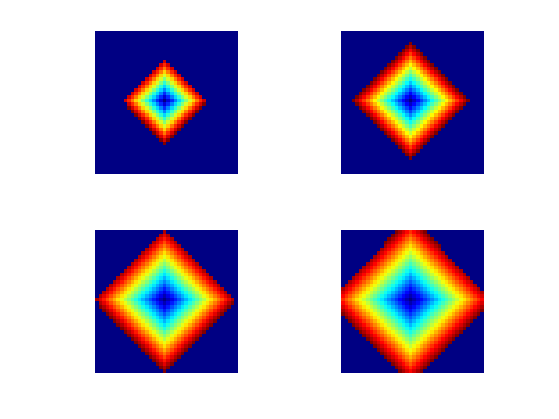
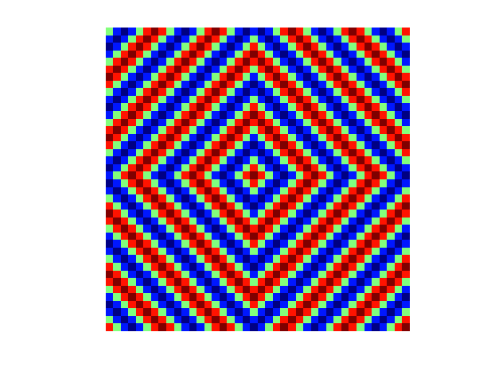
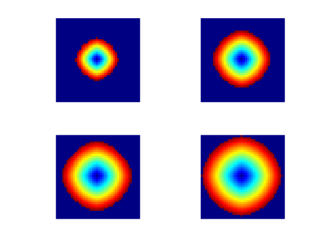
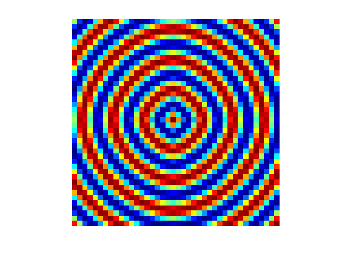
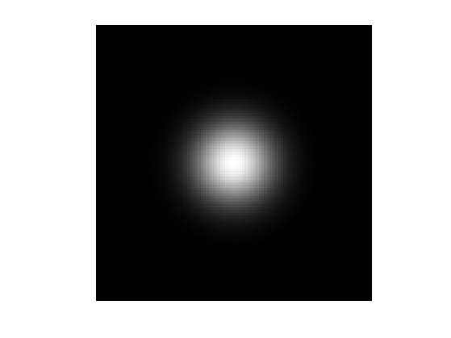
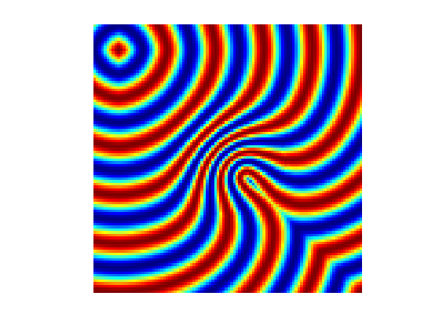
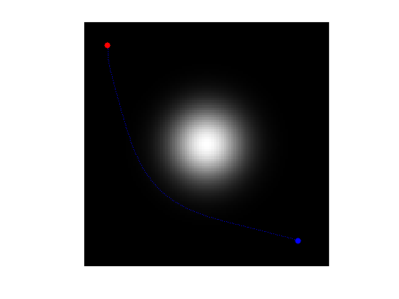

Dijkstra and Fast Marching Algorithms
This numerical tours details the implementations of Dijkstra and Fast Marching algorithms in 2-D.
Contents
The implementation are performed in Matlab, and are hence quite slow.
Installing toolboxes and setting up the path.
You need to download the following files: signal toolbox, general toolbox and graph toolbox.
You need to unzip these toolboxes in your working directory, so that you have toolbox_signal, toolbox_general and toolbox_graph in your directory.
For Scilab user: you must replace the Matlab comment '%' by its Scilab counterpart '//'.
Recommandation: You should create a text file named for instance numericaltour.sce (in Scilab) or numericaltour.m (in Matlab) to write all the Scilab/Matlab command you want to execute. Then, simply run exec('numericaltour.sce'); (in Scilab) or numericaltour; (in Matlab) to run the commands.
Execute this line only if you are using Matlab.
getd = @(p)path(p,path); % scilab users must *not* execute this
Then you can add the toolboxes to the path.
getd('toolbox_signal/'); getd('toolbox_general/'); getd('toolbox_graph/');
Navigating on the Grid
We use a cartesian grid of size \(n \times n\), and defines operators to navigate in the grid.
We use a singe index \(i \in \{1,\ldots,n^2\}\) to index a position on the 2-D grid.
Size of the grid.
n = 40;
The four displacement vector to go to the four neightbors.
neigh = [[1;0] [-1;0] [0;1] [0;-1]];
For simplicity of implementation, we use periodic boundary conditions.
boundary = @(x)mod(x-1,n)+1;
For a given grid index k, and a given neighboring index k in \({1,2,3,4}\), Neigh(k,i) gives the corresponding grid neighboring index.
ind2sub1 = @(k)[rem(k-1, n)+1; (k - rem(k-1, n) - 1)/n + 1]; sub2ind1 = @(u)(u(2)-1)*n+u(1); Neigh = @(k,i)sub2ind1( boundary(ind2sub1(k)+neigh(:,i)) );
Dikstra Algorithm
The Dijkstra algorithm compute the geodesic distance on a graph. We use here a graph whose nodes are the pixels, and whose edges defines the usual 4-connectity relationship.
In the following, we use the notation \(i \sim j\) to indicate that an index \(j\) is a neighbor of \(i\) on the graph defined by the discrete grid.
The metric \(W(x)\). We use here a constant metric.
W = ones(n);
Set \(\Ss = \{x_0\}\) of initial points.
x0 = [n/2;n/2];
Initialize the stack of available indexes.
I = sub2ind1(x0);
Initialize the distance to \(+\infty\), excepted for the boundary conditions.
D = zeros(n)+Inf; D(I) = 0;
Initialize the state to 0 (unexplored), excepted for the boundary point \(\Ss\) (indexed by I) to \(1\) (front).
S = zeros(n); S(I) = 1;
The first step of each iteration of the method is to pop the from stack the element \(i\) with smallest current distance \(D_i\).
[tmp,j] = sort(D(I)); j = j(1); i = I(j); I(j) = [];
We update its state \(S\) to be dead (-1).
S(i) = -1;
Retrieve the list of the four neighbors.
J = [Neigh(i,1); Neigh(i,2); Neigh(i,3); Neigh(i,4)];
Remove those that are dead (no need to consider them anymore).
J(S(J)==-1) = [];
Add those that are not yet considered (state 0) to the front stack \(I\) (state 1).
J1 = J(S(J)==0); I = [I; J1]; S(J1) = 1;
Update neighbor values. For each neightbo \(j\) of \(i\), perform the update, assuming the length of the edge between \(j\) and \(k\) is \(W_j\). \[ D_j \leftarrow \umin{k \sim j} D_k + W_j. \]
for j=J' dx = min( D([Neigh(j,1) Neigh(j,2)]) ); dy = min( D([Neigh(j,3) Neigh(j,4)]) ); D(j) = min(dx+W(j), dy+W(j)); end
Exercice 1: (check the solution) Implement the Dijkstra algorithm by iterating these step while the stack I is non empty. Display from time to time the front that propagates.
exo1;
Display the geodesic distance map using a cosine modulation to make the level set appears more clearly.
displ = @(D)cos(2*pi*5*D/max(D(:)));
clf;
imageplot(displ(D));
colormap jet(256);
 Fast Marching
The Dijstra algorithm suffers from a strong metrization problem, and it actually computes the \(\ell^1\) distance on the grid.
The Fast Marching algorithm replace the graph update by a local resolution of the Eikonal equation. This reduces significantly the grid bias, and can be shown to converge to the underlying geodesic distance when the grid step size tends to zero.
Over a continuous domain, the distance map \(D(x)\) to a set of seed points \( \Ss \) is the unique solution in the viscosity sense \[ \forall x \notin \Ss, \quad \norm{\nabla D(x)} = W(x) \qandq \forall y \in \Ss, \quad D(y) = 0. \]
The equation is then discretized on a grid of \(n \times n\) pixel, and a solution \( (D_{k,\ell})_{k,\ell=1}^n \in \RR^{n \times n} \) is found by using an upwind finite difference approximation, that is faithful to the viscosity solution \[ \forall (k,\ell) \notin \tilde \Ss, \quad \norm{ (\nabla D)_{k,\ell} } = W_{k,\ell} \qandq \forall (k,\ell) \notin \tilde \Ss, \quad D_{k,\ell}=0, \] where \(\tilde \Ss\) is the set of discrete starting points (defined here by x0).
To be consisten with the viscosity solution, one needs to use a non-linear upwind gradient derivative. This corresponds to computing the norm of the gradient as \[ \norm{ (\nabla D)_{k,\ell} }^2 = \max( D_{k+1,\ell}-D_{k,\ell}, D_{k-1,\ell}-D_{k,\ell}, 0 )^2 + \max( D_{k,\ell+1}-D_{k,\ell}, D_{k,\ell-1}-D_{k,\ell}, 0 )^2. \]
A each step of the FM propagation, one update \( D_{k,\ell} \leftarrow d \) by solving the eikonal equation with respect to \(D_{k,\ell}\) alone. This is equivalent to solving the quadratic equation \[ (d-d_x)^2 + (d-d_y)^2 = w^2 \qwhereq w=W_{k,\ell}. \] and where \[ d_x = \min(D_{k+1,\ell},D_{k-1,\ell}) \qandq d_y = \min(D_{k,\ell+1},D_{k,\ell-1}). \]
The update is thus defined as \[ d = \choice{ \frac{d_x+d_y+ \sqrt{\De}}{2} \quad\text{when}\quad \De \geq 0, \\ \min(d_x,d_y)+w \quad \text{otherwise.} } \qwhereq \De = 2 w^2 - (d_x-d_y)^2. \]
Note that in the case where \(\De<0\), one has to use the Dijkstra update.
Once the Dijstra algorithm is implemented, the implementation of the Fast Marching is trivial. It just corresponds to replacing the graph udpate
D(j) = min(dx+W(j), dy+W(j));
by the eikonal update.
Delta = 2*W(j) - (dx-dy)^2; if Delta>=0 D(j) = (dx+dy+sqrt(Delta))/2; else D(j) = min(dx+W(j), dy+W(j)); end
Exercice 2: (check the solution) Implement the Fast Marching algorithm. Display from time to time the front that propagates.
exo2;
Display the geodesic distance map using a cosine modulation to make the level set appears more clearly.
clf;
imageplot(displ(D));
colormap jet(256);
 Computation of Geodesic Paths
We use a more complicated, non-constant metric, with a bump in the middle.
n = 100; x = linspace(-1,1,n); [Y,X] = meshgrid(x,x); sigma = .2; W = 1 + 8 * exp(-(X.^2+Y.^2)/(2*sigma^2));
Display it.
clf; imageplot(W);
Starting points.
x0 = round([.1;.1]*n); % [.8;.8]]*n);
Exercice 3: (check the solution) Compute the distance map to these starting point using the FM algorithm.
exo3;
Once the geodesic distance map to \(\Ss\) has been computed, the geodesic curve between any point \(x_1\) and \(\Ss\) extracted through gradient descent \[ \ga'(t) = - \eta_t \nabla D(\ga(t)) \qandq \ga(0)=x_1 \] where \(\eta_t>0\) controls the parameterization speed of the resulting curve.
To obtain unit speed parameterization, one can use \(\eta_t = \norm{\nabla D(\ga(t))}^{-1}\) (one need to be careful when \(\ga\) approaches \(\Ss\) since \(D\) is not smooth on \(\Ss\)).
Compute the gradient \(G_0(x) = \nabla D(x) \in \RR^2\) of the distance map. Use centered differences.
options.order = 2; G0 = grad(D, options);
Normalize the gradient to obtained \(G(x) = G_0(x)/\norm{G_0(x)}\), in order to have unit speed geodesic curve (parameterized by arc length).
G = G0 ./ repmat( sqrt( sum(G0.^2, 3) ), [1 1 2]);
The geodesic is then numerically computed using a discretized gradient descent, which defines a discret curve \( (\ga_k)_k \) using \[ \ga_{k+1} = \ga_k - \tau G(\ga_k) \] where \(\ga_k \in \RR^2\) is an approximation of \(\ga(t)\) at time \(t=k\tau\), and the step size \(\tau>0\) should be small enough.
Step size \(\tau\) for the gradient descent.
tau = .8;
Initialize the path with the ending point.
x1 = round([.9;.88]*n); gamma = x1;
Define a shortcut to interpolate \(G\) at a 2-D points. Warning: the interp2 switches the role of the axis ...
Geval = @(G,x)[interp2(1:n,1:n,G(:,:,1),x(2),x(1)); ...
interp2(1:n,1:n,G(:,:,2),x(2),x(1)) ];
Compute the gradient at the last point in the path, using interpolation.
g = Geval(G, gamma(:,end));
Perform the descent and add the new point to the path.
gamma(:,end+1) = gamma(:,end) - tau*g;
Exercice 4: (check the solution) Perform the full geodesic path extraction by iterating the gradient descent. You must be very careful when the path become close to \(x_0\), because the distance function is not differentiable at this point. You must stop the iteration when the path is close to \(x_0\).
exo4;
Display the geodesic curve.
clf; hold on; imageplot(W); colormap gray(256); h = plot(gamma(2,:),gamma(1,:), '.b'); set(h, 'LineWidth', 2); h = plot(x0(2),x0(1), '.r'); set(h, 'MarkerSize', 25); h = plot(x1(2),x1(1), '.b'); set(h, 'MarkerSize', 25); axis ij;